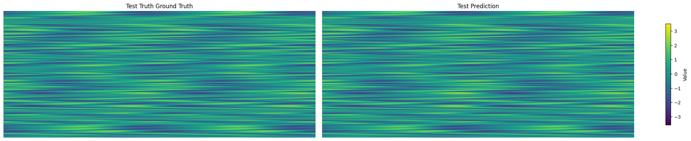

SHRED-ROM Tutorial on Kuramoto Sivashinsky#

Import Libraries#
# PYSHRED
import pyshred
from pyshred import ParametricDataManager, SHRED, ParametricSHREDEngine
# Other helper libraries
import matplotlib.pyplot as plt
from scipy.io import loadmat
import torch
import numpy as np
The autoreload extension is already loaded. To reload it, use:
%reload_ext autoreload
Load Kuramoto Sivashinsky dataset#
import numpy as np
import urllib.request
# URL of the NPZ file
url = 'https://zenodo.org/records/14524524/files/KuramotoSivashinsky_data.npz?download=1'
# Local filename to save the downloaded file
filename = 'KuramotoSivashinsky_data.npz'
# Download the file from the URL
urllib.request.urlretrieve(url, filename)
# Load the data from the NPZ file
dataset = np.load(filename)
Device Info#
device = pyshred.set_device("auto")
# device = pyshred.set_device("cpu") # force CPU
# device = pyshred.set_device("cuda") # force CUDA
# device = pyshred.set_device("mps") # force MPS
# device = pyshred.set_device("cuda", device_id=0) # force specific GPU
pyshred.device_info()
=== PyShred Device Information ===
Current device: cpu
Device config: DeviceConfig(device_type=<DeviceType.AUTO: 'auto'>, device_id=None, force_cpu=False, warn_on_fallback=True)
Device Availability:
CUDA available: False
MPS available: False
CPU: Always available
Initialize Data Manager#
# Initialize ParametricSHREDDataManager
manager = ParametricDataManager(
lags = 20,
train_size = 0.8,
val_size = 0.1,
test_size = 0.1,
)
Add datasets and sensors#
data = dataset['u'] # shape (500, 201, 100)
params = dataset['mu'] # shape (500, 201, 2)
manager.add_data(
data=data,
random=3,
# stationary=[(15,),(30,),(45,)],
id = 'KS',
compress = False
)
# add params
manager.add_data(
data=params,
# stationary=[(15,),(30,),(45,)],
id = 'MU',
compress = False
)
Analyze sensor summary#
manager.sensor_measurements_df
| KS-0 | KS-1 | KS-2 | |
|---|---|---|---|
| 0 | -0.434038 | -1.148071 | 0.154032 |
| 1 | -0.457136 | -0.961066 | 0.332515 |
| 2 | -0.459894 | -0.912785 | 0.361393 |
| 3 | -0.446475 | -0.873385 | 0.404951 |
| 4 | -0.389743 | -0.829674 | 0.485893 |
| ... | ... | ... | ... |
| 100495 | -0.846195 | -1.008426 | 0.261712 |
| 100496 | -1.671882 | -0.458563 | -0.622521 |
| 100497 | -2.103602 | 0.638096 | -1.591052 |
| 100498 | -1.971333 | 1.887684 | -2.129965 |
| 100499 | -1.450100 | 2.538589 | -2.005693 |
100500 rows × 3 columns
manager.sensor_summary_df
| data id | sensor_number | type | loc/traj | |
|---|---|---|---|---|
| 0 | KS | 0 | stationary (random) | (18,) |
| 1 | KS | 1 | stationary (random) | (93,) |
| 2 | KS | 2 | stationary (random) | (15,) |
Get train, validation, and test set#
train_dataset, val_dataset, test_dataset= manager.prepare()
Initialize SHRED#
When using a ParametricDataManager, ensure latent_forecaster is set to None.
shred = SHRED(sequence_model="LSTM", decoder_model="MLP", latent_forecaster=None)
Fit SHRED#
val_errors = shred.fit(train_dataset=train_dataset, val_dataset=val_dataset, num_epochs=20, sindy_regularization=0)
print('val_errors:', val_errors)
Fitting SHRED...
Epoch 1: Average training loss = 0.031690
Validation MSE (epoch 1): 0.026569
Epoch 2: Average training loss = 0.016993
Validation MSE (epoch 2): 0.015352
Epoch 3: Average training loss = 0.011736
Validation MSE (epoch 3): 0.012691
Epoch 4: Average training loss = 0.009915
Validation MSE (epoch 4): 0.011286
Epoch 5: Average training loss = 0.008901
Validation MSE (epoch 5): 0.010464
Epoch 6: Average training loss = 0.008259
Validation MSE (epoch 6): 0.009664
Epoch 7: Average training loss = 0.007670
Validation MSE (epoch 7): 0.008933
Epoch 8: Average training loss = 0.007126
Validation MSE (epoch 8): 0.008480
Epoch 9: Average training loss = 0.006610
Validation MSE (epoch 9): 0.008143
Epoch 10: Average training loss = 0.006278
Validation MSE (epoch 10): 0.008485
Epoch 11: Average training loss = 0.005930
Validation MSE (epoch 11): 0.007433
Epoch 12: Average training loss = 0.005582
Validation MSE (epoch 12): 0.006999
Epoch 13: Average training loss = 0.005281
Validation MSE (epoch 13): 0.006656
Epoch 14: Average training loss = 0.005139
Validation MSE (epoch 14): 0.006386
Epoch 15: Average training loss = 0.004810
Validation MSE (epoch 15): 0.005950
Epoch 16: Average training loss = 0.004614
Validation MSE (epoch 16): 0.005578
Epoch 17: Average training loss = 0.004570
Validation MSE (epoch 17): 0.005578
Epoch 18: Average training loss = 0.004257
Validation MSE (epoch 18): 0.005292
Epoch 19: Average training loss = 0.004113
Validation MSE (epoch 19): 0.005244
Epoch 20: Average training loss = 0.004088
Validation MSE (epoch 20): 0.005059
val_errors: [0.02656859 0.0153518 0.01269077 0.01128609 0.01046397 0.00966403
0.00893335 0.00848005 0.00814289 0.00848533 0.00743333 0.00699905
0.00665622 0.00638625 0.00594996 0.00557757 0.00557818 0.00529238
0.00524372 0.00505928]
Evaluate SHRED#
train_mse = shred.evaluate(dataset=train_dataset)
val_mse = shred.evaluate(dataset=val_dataset)
test_mse = shred.evaluate(dataset=test_dataset)
print(f"Train MSE: {train_mse:.3f}")
print(f"Val MSE: {val_mse:.3f}")
print(f"Test MSE: {test_mse:.3f}")
Train MSE: 0.003
Val MSE: 0.005
Test MSE: 0.004
Initialize Parametric SHRED Engine for Downstream Tasks#
engine = ParametricSHREDEngine(manager, shred)
Sensor Measurements to Latent Space#
test_latent_from_sensors = engine.sensor_to_latent(manager.test_sensor_measurements)
Decode Latent Space to Full-State Space#
test_prediction = engine.decode(test_latent_from_sensors) # latent space generated from sensor data
Compare prediction against the truth#
Since both number of trajectories (data.shape[0]) and number of timesteps (data.shape[1]) are both variable, we will leave them combined on the first axis. The remaining axes are all spatial dimensions.
spatial_shape = data.shape[2:]
test_data = data[manager.test_indices]
truth = test_data.reshape(-1, *spatial_shape)
prediction = test_prediction['KS']
compare_data = [truth, prediction]
titles = ["Test Truth Ground Truth", "Test Prediction"]
vmin, vmax = np.min([d.min() for d in compare_data]), np.max([d.max() for d in compare_data])
fig, axes = plt.subplots(1, 2, figsize=(20, 4), constrained_layout=True)
for ax, d, title in zip(axes, compare_data, titles):
im = ax.imshow(d, vmin=vmin, vmax=vmax, aspect='auto')
ax.set(title=title)
ax.axis("off")
fig.colorbar(im, ax=axes, label="Value", shrink=0.8)
<matplotlib.colorbar.Colorbar at 0x2a69c042da0>

Predicted params#
params_prediction = test_prediction['MU']
print(params_prediction.shape)
params_prediction
(10050, 2)
array([[1.502923 , 2.701217 ],
[1.5866294, 4.104658 ],
[1.6049353, 4.049966 ],
...,
[1.0774401, 2.5793262],
[0.9692009, 2.925611 ],
[1.0723687, 2.6876066]], dtype=float32)
Evaluate MSE on Ground Truth Data#
Since both number of trajectories (data.shape[0]) and number of timesteps (data.shape[1]) are both variable, we will leave them combined on the first axis. The remaining axes are all spatial dimensions.
# Train
t_train = len(manager.train_sensor_measurements)
train_Y = {'KS': data[0:t_train].reshape(-1, *spatial_shape)} # unpack the spatial dimensions
train_error = engine.evaluate(manager.train_sensor_measurements, train_Y)
# Val
t_val = len(manager.test_sensor_measurements)
val_Y = {'KS': data[t_train:t_train+t_val].reshape(-1, *spatial_shape)}
val_error = engine.evaluate(manager.val_sensor_measurements, val_Y)
# Test
t_test = len(manager.test_sensor_measurements)
test_Y = {'KS': data[-t_test:].reshape(-1, *spatial_shape)}
test_error = engine.evaluate(manager.test_sensor_measurements, test_Y)
print('---------- TRAIN ----------')
print(train_error)
print('\n---------- VAL ----------')
print(val_error)
print('\n---------- TEST ----------')
print(test_error)
---------- TRAIN ----------
MSE RMSE MAE R2
dataset
KS 0.085787 0.292894 0.189655 0.934717
---------- VAL ----------
MSE RMSE MAE R2
dataset
KS 0.1452 0.381051 0.237308 0.887799
---------- TEST ----------
MSE RMSE MAE R2
dataset
KS 0.08774 0.29621 0.185969 0.933305